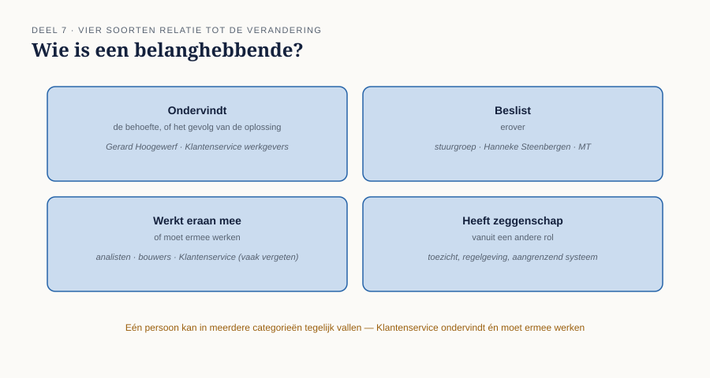
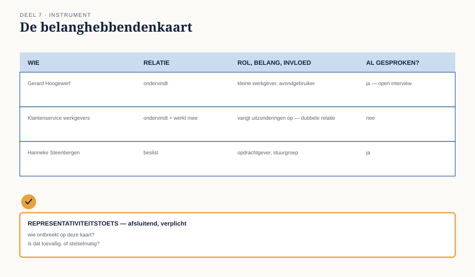

Cursus Businessanalyse · Niveau 1 (ECBA) · Deel 7 van 30
Belanghebbende: rollen, belangen, drijfveren.
Deel 6 gaf u de technieken om een behoefte op te halen — maar elke techniek is zo goed als de keuze wíe u ermee benadert. Bij WGP 2.0 zijn drie werkgevers geraadpleegd, de drie grootste, en niemand binnen Meridiaan zelf. In dit deel leert u belanghebbenden identificeren op basis van hun relatie tot de verandering in plaats van op beschikbaarheid, rol, belang en invloed van elkaar onderscheiden, representativiteit toetsen, en met de belanghebbendenkaart systematisch vaststellen wie erbij hoort — en wie ontbreekt.
8secties
±1,5uleestijd + werkboek
6controlevragen
B6bevinding gesloten
Positionering. Deze cursus is een voorbereiding op het ECBA-examen van IIBA en uitdrukkelijk geen vervanging van het officiële examenmateriaal — A Guide to the Business Analysis Body of Knowledge (BABOK Guide) en The Business Analysis Standard, beide gratis te raadplegen via iiba.org. Alle formuleringen, figuren en werkvormen in dit materiaal zijn van Ductus; studeer voor het examen altijd óók de bron.
Niveau 1: ➊ Verandering mogelijk maken → ➋ Het denkraam → ➌ Houding en principes → ➍ Rollen en benaderingen → ➎ Scope en impact → ➏ Behoefte eliciteren → ➐ Belanghebbenden (hier) → ➑ Oplossing → ➒ Waarde en context → ➓ Examentraining + capstone
01
Waar dit deel over gaat
⏱ 8 min
Deel 6 gaf u de technieken om een behoefte op te halen. Maar elke techniek is zo goed als de keuze wíe u ermee benadert. Dit deel gaat over die keuze: hoe u vaststelt wie er allemaal een relatie heeft met een verandering, en hoe u voorkomt dat u onbewust alleen de makkelijkst bereikbare mensen spreekt.
Aan het eind van dit deel kunt u:
belanghebbenden identificeren op basis van hun relatie tot een verandering, niet op basis van beschikbaarheid;
rol, belang en invloed van een belanghebbende van elkaar onderscheiden;
vaststellen of een groep gesproken belanghebbenden representatief is voor de volledige populatie die geraakt wordt;
met de belanghebbendenkaart systematisch in beeld brengen wie erbij hoort — en wie ontbreekt.
Dit deel sluit bevinding B6: er is gesproken met drie werkgevers, en met niemand binnen.
02
De casus: drie van de vierduizend
⏱ 10 min
Uit het casusdossier: bij WGP 2.0 zijn drie werkgevers geraadpleegd — de drie grootste. De ruim vierduizend kleine werkgevers, en niemand binnen Meridiaan, zijn niet gesproken.
Merel legt de lijst van geraadpleegde werkgevers uit WGP 2.0 naast het werkgeversbestand. Alle drie leveren hun mutaties per bestand aan, gebruiken het portaal amper, en hebben eigen salarisadministraties met specialistische kennis in huis.
Ze belt Ayla. "Waarom deze drie?"
"Dat waren de werkgevers waar de accountmanagers al een relatie mee hadden. Makkelijk te plannen, kwamen snel terug op onze uitnodiging."
"En Klantenservice, Uitvoering — zijn die gesproken?"
"Nee. Die zouden toch straks gewoon met het nieuwe portaal werken."
Twee dingen vallen op. Ten eerste: de drie geraadpleegde werkgevers waren precies de groep die het portaal het minst gebruikt. Ten tweede: de mensen die het meest direct met de gevolgen van het portaal zouden moeten werken — Klantenservice, Uitvoering — werden niet als belanghebbenden gezien, maar als uitvoerders van een besluit dat al vaststond. Beide zijn het gevolg van dezelfde denkfout: belanghebbenden werden gekozen op beschikbaarheid en nabijheid, niet op relatie tot de verandering.
03
Wie is een belanghebbende?
⏱ 15 min
Terug naar het denkraam uit deel 2: een belanghebbende is ieder met een relatie tot de verandering, de behoefte of de oplossing. Dat is een ruimere definitie dan "iedereen die er meningen over heeft" of "iedereen die er makkelijk bij te halen is" — en het is preciezer dan "de gebruikers", want er zijn vaak belanghebbenden die nooit zelf de oplossing gebruiken maar er wel een relatie mee hebben.
Om systematisch te zoeken, is het nuttig relatie in vier soorten uit te splitsen:
Wie ondervindt de behoefte, of het gevolg van de oplossing? Kleine werkgevers zoals Gerard Hoogewerf; Klantenservice werkgevers, die de uitzonderingen opvangen; Uitvoering, die het handmatige werk doet.
Wie beslist erover? De stuurgroep, Hanneke Steenbergen als opdrachtgever, uiteindelijk het MT.
Wie werkt eraan mee, of moet ermee werken? De analisten, de bouwers, en — vaak vergeten — de medewerkers wier dagelijkse werk verandert zonder dat zij ooit "aan het project" werkten, zoals Klantenservice.
Wie heeft er zeggenschap over vanuit een andere rol — toezicht, regelgeving, een aangrenzend systeem? Bij Meridiaan wordt dit type belanghebbende pas op niveau 3 zwaarwegend (DNB, AFM), maar het bestaat ook op kleinere schaal: bijvoorbeeld de eigenaar van een ander systeem waarmee gekoppeld wordt.
Eén persoon kan in meerdere van deze vier categorieën tegelijk vallen. Klantenservice werkgevers ondervindt het gevolg én moet ermee werken — een dubbele relatie die haar tot een van de belangrijkste belanghebbenden van de hele verandering maakt, en die bij WGP 2.0 volledig over het hoofd is gezien.

Figuur 7-1 — vier soorten relatie tot een verandering, met voorbeelden uit de casus
Controlevraag
Uit Werkboek deel 7, Opdracht 1 — vier soorten relatie toepassen
1Wijs voor Pim Vroegop (teamleider Uitvoering Zwolle), Gerard Hoogewerf (kleine werkgever), Hanneke Steenbergen (directeur Uitvoering) en een fictieve leverancier van een aangrenzend loonsysteem aan welke van de vier soorten relatie uit §7.3 van toepassing zijn.Toon antwoord
Pim Vroegop — ondervindt (zijn team verwerkt de uitzonderingen) én werkt mee (zal betrokken zijn bij een eventuele nieuwe oplossing). Gerard Hoogewerf — ondervindt. Hanneke Steenbergen — beslist, en in mindere mate ondervindt (als eindverantwoordelijke voor Uitvoering voelt zij de gevolgen indirect). De leverancier van het aangrenzend systeem — heeft zeggenschap vanuit een andere rol: elke wijziging aan de koppeling raakt hun systeem, ongeacht of zij "belanghebbende" worden genoemd in het project.
04
Rol, belang en invloed
⏱ 18 min
Voor elke belanghebbende die u identificeert, zijn drie dingen apart de moeite van het vastleggen waard — ze worden vaak door elkaar gehaald, terwijl ze elk iets anders zeggen.
Rol — de formele of feitelijke positie: werkgever, Klantenservice-medewerker, directeur, toezichthouder. Zegt iets over wát iemand doet.
Belang — waar iemand baat bij heeft, of wat hij te verliezen heeft bij deze verandering. Zegt iets over wáárom iemand zich ermee bemoeit, of zou moeten bemoeien. Gerard Hoogewerf heeft belang bij minder gedoe 's avonds; Klantenservice heeft belang bij minder onvoorspelbaar werk.
Invloed — hoeveel zeggenschap of macht iemand feitelijk heeft over de uitkomst, los van hoe groot zijn belang is. Hanneke Steenbergen heeft grote invloed en een gematigd persoonlijk belang (zij ondervindt de dagelijkse gevolgen niet zelf). Gerard Hoogewerf heeft een reëel belang en nagenoeg geen invloed — hij kan niet meebeslissen, hoogstens meepraten als iemand hem daarvoor uitnodigt.
De denkfout die WGP 2.0 maakte
De drie grote werkgevers werden gekozen omdat ze makkelijk te bereiken waren — een factor die niets met rol, belang of invloed te maken heeft. Dat is een vierde, ongewenste factor die zich graag vermomt als een geldige reden: beschikbaarheid. Beschikbaarheid mag meewegen bij de planning van gesprekken; zij mag nooit bepalend zijn voor de vraag wíe u spreekt. Zodra dat wel gebeurt, ontstaat er een vertekend beeld dat toevallig ook nog overtuigend oogt — er zíjn tenslotte drie werkgevers gesproken, het ziet eruit als zorgvuldig werk.
Controlevragen
Uit Werkboek deel 7, Opdracht 2 en 3 — rol/belang/invloed uit elkaar houden en de denkfout blootleggen
1Beschrijf voor Ruud Kalsbeek (manager Klantenservice werkgevers) apart zijn rol, zijn belang bij de herstart en zijn geschatte invloed op de beslissing. Doe hetzelfde voor Wilma Prins. Bij wie liggen belang en invloed dicht bij elkaar, en bij wie ver uit elkaar?Toon antwoord
Ruud Kalsbeek — rol: manager Klantenservice werkgevers. Belang: hoog (zijn team ondervindt de gevolgen dagelijks, zijn caseload is direct beïnvloed). Invloed: laag-formeel (geen stuurgroepzetel bij WGP 2.0), maar potentieel hoog feitelijk, omdat hij als enige de cijfers en de praktijk kent. Wilma Prins — rol: salarisadministrateur bij een grote werkgever. Belang: gematigd (haar specifieke probleem — meerdere regelingen — is vervelend maar niet dagelijks bepalend voor haar werk). Invloed: laag, als individuele werkgever, tenzij zij namens een grotere groep spreekt. Vergelijking: bij Wilma liggen belang en invloed dicht bij elkaar (beide laag-gematigd), wat haar tot een "makkelijke" maar niet per se representatieve bron maakt. Bij Ruud liggen belang en formele invloed ver uit elkaar — hoog belang, lage formele invloed — en dat is precies het type belanghebbende dat systematisch wordt overgeslagen als selectie op beschikbaarheid en formele positie gebeurt in plaats van op relatie en belang.
2Bereken (ruwweg) welk percentage van het totale werkgeversbestand door de drie geraadpleegde werkgevers wordt vertegenwoordigd. Formuleer in één zin waarom dit percentage misleidend zorgvuldig oogt.Toon antwoord
12 grote werkgevers op een totaal van ongeveer 4.792 (12 + 380 + 4.400) is ongeveer 0,25% van het bestand. De drie geraadpleegde werkgevers vertegenwoordigen dus een kwart procent van de populatie, terwijl het project zich richtte op alle werkgevers. Dit oogt misleidend zorgvuldig omdat "drie werkgevers gesproken" op zichzelf als een redelijke inspanning klinkt — het cijfer verhult pas zijn eigen onbeduidendheid zodra het wordt afgezet tegen de totale populatie.
05
Representativiteit: spreek je de juiste mensen, of de makkelijkste?
⏱ 12 min
Zelfs met de juiste categorieën in beeld, blijft er een vraag die apart gesteld moet worden: is de groep die u daadwerkelijk spreekt representatief voor de volledige populatie die geraakt wordt?
Bij Meridiaan bestaat de groep werkgevers uit ruwweg 4.800 organisaties, waarvan de overgrote meerderheid — ruim 4.000 — een kleine werkgever is zoals Gerard of Yasmin uit deel 6. Drie grote werkgevers vertegenwoordigen geen enkele van de kenmerken die deze meerderheid deelt: zij leveren via bestand aan, gebruiken het portaal amper, en hebben professionele ondersteuning. Het is niet dat deze drie werkgevers niets waardevols te zeggen hadden — Wilma Prins' punt over meerdere regelingen uit deel 5 was relevant — maar hun ervaring dekt niet de ervaring van de meerderheid.
Een eenvoudige controlevraag
Stel uzelf deze vraag na elke ronde gesprekken
"Als ik alleen met deze mensen had gesproken, welk deel van de belanghebbenden zou ik dan nooit gehoord hebben — en is dat toevallig, of stelselmatig?"
Bij WGP 2.0 is het antwoord stelselmatig: elke kleine werkgever, elke medewerker van Klantenservice en Uitvoering viel buiten beeld, en dat gebeurde niet toevallig maar doordat de selectie op beschikbaarheid liep in plaats van op relatie tot de verandering.
Controlevraag
Uit Werkboek deel 7, Opdracht 4 — de representativiteitscheck
1Stel dat de herstartgroep besluit om, net als bij WGP 2.0, drie werkgevers te spreken — maar dit keer bewust drie kleine werkgevers, allemaal uit dezelfde regio en dezelfde sector (bijvoorbeeld drie installatiebedrijven uit Twente). Is dit al voldoende representatief?Toon antwoord
Nee, nog niet voldoende. De controlevraag uit §7.5 laat zien waarom: als alleen installatiebedrijven uit één regio worden gesproken, blijft de vraag "welk deel van de belanghebbenden zou ik dan nooit gehoord hebben, en is dat toevallig of stelselmatig?" onbeantwoord voor sectoren met andere kenmerken (bijvoorbeeld seizoensarbeid, veel deeltijd, hoog verloop) en voor andere regio's. Dit is een verbetering ten opzichte van WGP 2.0 — de omvangscategorie klopt nu wél — maar spreiding in sector en regio is een aparte representativiteitsvraag die apart beantwoord moet worden.
06
De werkvorm: de belanghebbendenkaart
⏱ 20 min
Het instrument van dit deel is de belanghebbendenkaart: een overzicht van alle belanghebbenden, ingedeeld naar relatie, rol, belang en invloed, met een expliciete representativiteitscheck.
Het blad
Voor elke belanghebbende (of groep belanghebbenden):
De vier vaste kolommen
Wie — naam of omschrijving van de groep. Relatie — ondervindt, beslist, werkt mee, of heeft zeggenschap vanuit een andere rol (§7.3); meerdere relaties mogen tegelijk gelden. Rol, belang, invloed — apart ingevuld (§7.4). Al gesproken? — ja, met welke techniek uit deel 6; of nee.
Het veld dat het verschil maakt
Het afsluitende, verplichte veld
"Wie ontbreekt op deze kaart, en is dat waarschijnlijk toeval?"
Dit veld dwingt tot het spiegelbeeld van de rest van de kaart: niet wie u hebt gevonden, maar wie er stelselmatig ontbreekt. Vraag hierbij expliciet: is er een groep die op geen van de eerdere regels voorkomt, terwijl zij wel een relatie heeft volgens §7.3? Bij WGP 2.0 zou dit veld in één keer Klantenservice, Uitvoering en de ruim vierduizend kleine werkgevers hebben blootgelegd.

Figuur 7-2 — de belanghebbendenkaart, met representativiteit als afsluitende, verplichte toets
Toegepast op WGP 2.0, achteraf
Wie
Relatie
Belang
Invloed
Gesproken?
Drie grote werkgevers
Ondervindt (beperkt, gebruikt portaal amper)
Laag-gemiddeld
Laag
Ja
~4.000 kleine werkgevers
Ondervindt (dagelijks)
Hoog
Laag individueel, hoog gezamenlijk
Nee
Klantenservice werkgevers
Ondervindt + werkt mee
Hoog
Laag formeel, hoog feitelijk (kent het werk)
Nee
Uitvoering (Pim Vroegop e.a.)
Ondervindt + werkt mee
Hoog
Laag formeel
Nee
Hanneke Steenbergen
Beslist
Gematigd
Hoog
Ja (als opdrachtgever)
Het patroon springt eruit zodra het zo naast elkaar staat: precies de belanghebbenden met het hoogste belang en de meeste vakkennis waren het minst betrokken.
Controlevraag
Uit Werkboek deel 7, Opdracht 5 — de belanghebbendenkaart invullen (tweetallen)
1Vul samen een belanghebbendenkaart in voor de herstart, met minimaal vijf regels, minstens één interne en minstens twee externe belanghebbenden, en het afsluitende veld: wie ontbreekt, en is dat toeval?Toon antwoord
Geen vast modelantwoord; toets op de vijf verplichte elementen en op de kwaliteit van het afsluitende veld. Een sterk antwoord op het afsluitende veld benoemt bijvoorbeeld: "Middelgrote werkgevers (50-250 medewerkers) staan nergens op onze kaart — dat is waarschijnlijk geen toeval, want zij vallen precies tussen de twee groepen in die we wél makkelijk kunnen identificeren (grote werkgevers via accountmanagement, kleine werkgevers via Klantenservice-contact)."
07
Wat het examen hierover vraagt
⏱ 12 min
Dit deel dekt domein 7, belanghebbende, 10% van het ECBA-examen. Verwacht vragen die:
vragen om rol, belang en invloed van elkaar te onderscheiden in een situatieschets;
een selectie van geraadpleegde belanghebbenden voorleggen en vragen naar het risico van onvolledigheid;
vragen naar het verschil tussen beschikbaarheid en relevantie als selectiecriterium.
Begrippenlijst, vervolg
Nederlands
Engels
belanghebbende
stakeholder
rol
role
belang
interest
invloed
influence
representatief
representative
08
Terug naar de casus
⏱ 10 min
Bevinding B6 — er is gesproken met drie werkgevers en met niemand binnen — is met dit deel te herleiden tot een concrete denkfout: belanghebbenden werden geselecteerd op beschikbaarheid, niet op relatie, belang of invloed. De belanghebbendenkaart maakt die denkfout zichtbaar vóórdat zij tot gevolgen leidt, door uitdrukkelijk te vragen wie ontbreekt in plaats van alleen te bevestigen wie er is.
Vooruit naar deel 8. Met behoefte (deel 6) en belanghebbenden (deel 7) nu goed in beeld, is het tijd om terug te keren naar het lege vakje uit het evenwichtsblad van deel 2: de oplossing. Deel 8 gaat over opties, haalbaarheid en een onderbouwde aanbeveling.
Controlevraag
Uit Werkboek deel 7, Opdracht 6 — B6 sluiten (plenair)
1Waarom noemt de externe onderzoeker in de post-mortem specifiek het cijfer "12 tegenover 4.400"? Wat maakt een getal hier overtuigender dan de eerdere bevindingen, die geen cijfers bevatten?Toon antwoord
Een goed antwoord benoemt dat de eerdere bevindingen (B1 tot en met B5) kwalitatief van aard waren — ze beschrijven een patroon, geen omvang. Het getal "12 tegenover 4.400" maakt in één oogopslag zichtbaar hoe extreem scheef de selectie was, op een manier die geen ruimte laat voor het tegenargument "we hebben toch met een aantal werkgevers gesproken". Een cijfer overtuigt hier niet omdat het nauwkeuriger is dan de andere bevindingen, maar omdat het de schaal van de vertekening onmiddellijk voelbaar maakt — een les die relevant is voor hoe u zelf bevindingen presenteert aan een stuurgroep, iets dat in deel 9 en verder terugkomt.
Verder naar deel 8
Met behoefte (deel 6) en belanghebbenden (deel 7) nu goed in beeld, is het tijd om terug te keren naar het lege vakje uit het evenwichtsblad van deel 2: de oplossing. Deel 8 gaat over opties, haalbaarheid en een onderbouwde aanbeveling.